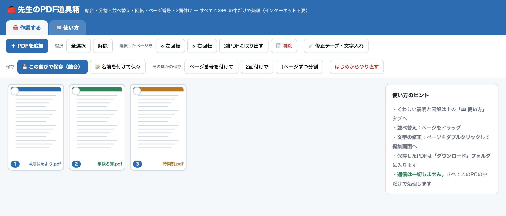

その無料PDFツール、
児童の名簿は“どこ”へ
送られていますか。
PDFの結合や修正のために、先生方がブラウザの無料ツールへファイルをアップロードする——その多くは、いったん外部のサーバーに送信されています。『先生のPDF道具箱』は、読み込んだPDFをその一台の中だけで処理します。通信は一切しません。インストールも登録も不要で、無料です。

- 1児童情報が校外に出ない。PDFの処理はすべて端末の中で完結し、通信は一切しません。ネットにつながっていない教室のPCでも動きます。
- 2稟議も申請もいりません。インストール不要。HTMLファイル1つを開くだけ。管理者権限・予算・調達手続きは一切不要です。
- 3全校に配っても無料。登録・広告・アカウントなし。現役の小学校教員が作り、完成品はいつでも無料です。
便利さの裏で、個人情報が校外へ出ている
お便りを1つにまとめる、名簿の一文字を直す、2枚を1枚に面付けする——PDFのちょっとした加工は、日々の校務でくり返し発生します。手が足りない現場では、検索して出てきた無料のオンラインPDFツールに頼るのが自然な流れです。
ただ、それらの多くは、ファイルをいったん外部のサーバーに送信して処理しています。つまり、名簿・成績・写真といった要配慮個人情報が、気づかないうちに校外を経由している。管理職・情報管理を預かる立場からすると、誰が・どのツールに・何を上げたのかを把握できず、説明もできない状態が生まれます。
すべて、この一台の中だけで完結する
『先生のPDF道具箱』は、読み込んだPDFを端末の中だけで処理します。データを外部へ送る仕組みそのものを持たないため、児童生徒の情報がネットワークに出ることがありません。だから、ネットから切り離された教室のPCでも動きます。
- 外部と通信するコード（サーバー送信・外部読み込み）を設計上まったく含んでいません。
- PDFの結合・編集は、オープンソースの pdf.js / pdf-lib を使い、すべてブラウザ内で実行します。
- ネットワークを遮断した環境でも同じように動くことが、その証拠です。
校務で必要な操作が、ひと通りそろう
専用ソフトを入れなくても、日々のPDF加工はこれで足ります。
やり直し（元に戻す）付き。画面の拡大も可能です。
稟議も、インストールも、予算もいらない
配布物はHTMLファイル1つだけ。ダブルクリックすれば、いつものブラウザ（Edge・Chrome）で開きます。ソフトのインストール、管理者権限、アカウント作成、予算措置、調達手続き——そのいずれも要りません。だからこそ、全校の先生にそのまま配れます。
| 確認項目 | 一般的な専用ソフト／オンラインツール | 先生のPDF道具箱 |
|---|---|---|
| データの居場所 | 外部サーバーに送信されることがある | 端末内のみ |
| インストール | 必要／管理者権限を要することが多い | 不要（ファイルを開くだけ） |
| 費用・調達 | ライセンス費・手続きが発生 | 無料・手続き不要 |
| アカウント | 登録が必要な場合がある | 不要・広告なし |
学校ぐるみで使うなら
完成品はいつでも無料です。そのうえで、校内研修で使い方を広げたい、学校の運用に合わせて導入を伴走してほしい——そうした「あなたの学校に合わせる」部分は、LiFE with が有償でお手伝いします。
上に説明するときのために
本当に通信しない、と言い切れますか？
ライセンス・著作権の扱いは？
児童生徒の個人情報が入ったPDFを扱ってよいですか？
費用は本当にかかりませんか？
保存したPDFはどこに入りますか？
GEG Chikuho 共同リーダー
School Stock ──「先生向けの、現場で使える教材・便利ツールの共有」